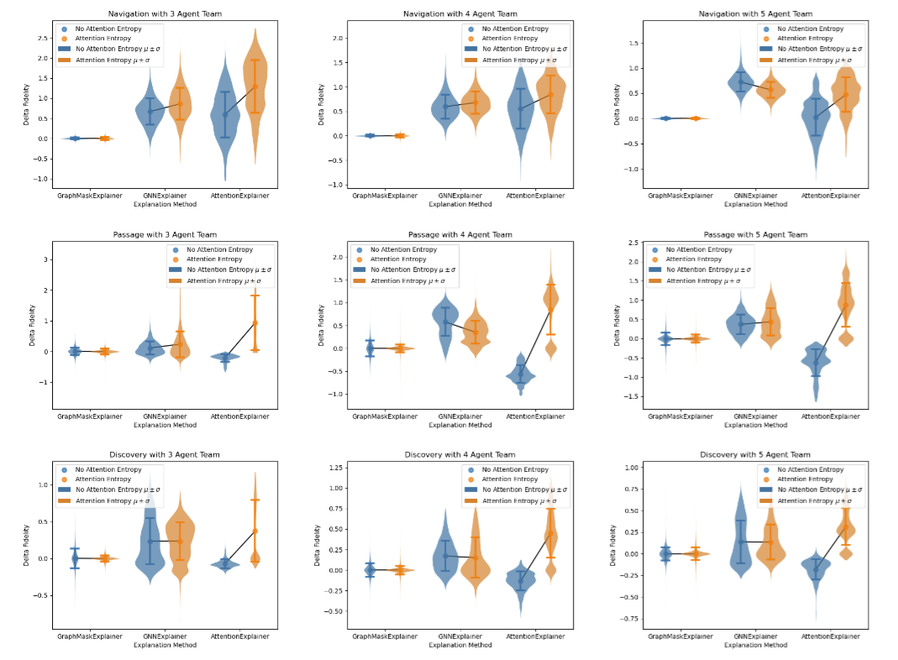

I'm an Applied Researcher at NVIDIA working on dexeterous manipulation and humanoid loco-manipulation. Previously, I was a master's student in Computer Science at Georgia Institute of Technology advised by Harish Ravichandar working on learning based methods for multi-robot coordination.

Publications
* indicates equal contribution

Experience
-
NVIDIA - Applied Researcher (Dec 2025 - Present) Dexterous manipulation and humanoid loco-manipulation.
-
NVIDIA - Robotics Engineering Intern (May 2025 - Aug 2025) Improving and evaluating humanoid whole body control.
-
NVIDIA - DRIVE AV Software Engineering Intern (May 2024 - Aug 2024) Generalized autonomous driving simulation for different autonomous vehicle stack components.
-
Amazon Robotics - Software Engineering Intern (May 2023 - Aug 2023) Coverage path planning for building high quality SLAM maps autonomously.
-
Amazon Robotics - Software Engineering Co-Op (Jan 2022 - Jul 2022) Orchestrated simulation and robot fleet management for autonomous mobile robots in human environments.
Teaching
- Graduate Head TA, CS 3630: Intro to Robotics and Perception (Spring 2025)
- Undergraduate TA, CS 3630: Intro to Robotics and Perception (Fall 2024)
- Undergraduate TA, CS 3630: Intro to Robotics and Perception (Spring 2024)
- Undergraduate TA, CS 3630: Intro to Robotics and Perception (Fall 2023)
Volunteering
- Reviewer – CoRL 2025